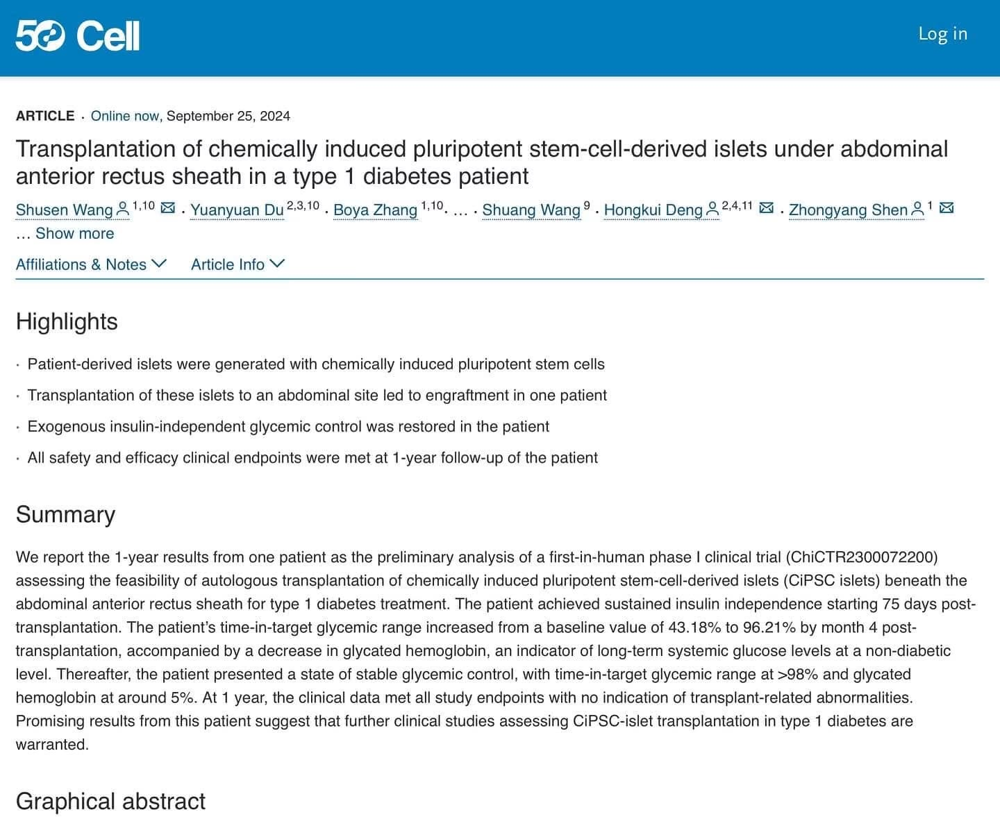

Reprogrammed stem-cell islet transplant freed a woman with type 1 diabetes from insulin
Shared from Luigi Fontana: a 25-year-old woman with type 1 diabetes received autologous chemically induced pluripotent stem cell islets under the abdominal rectus sheath. She stopped needing insulin within 2.5 months, with time-in-range rising from 43.18% to 96.21% by month 4 and above 98% afterward (HbA1c about 5%). At 1 year all endpoints were met with no transplant-related issues. A single patient, and about type 1 not cardiovascular disease.